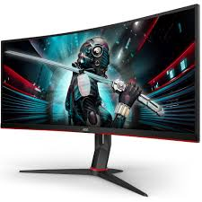
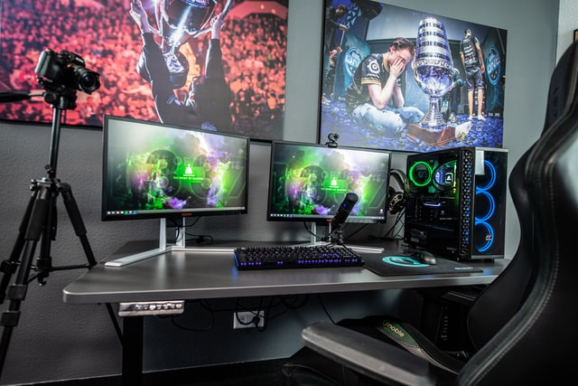
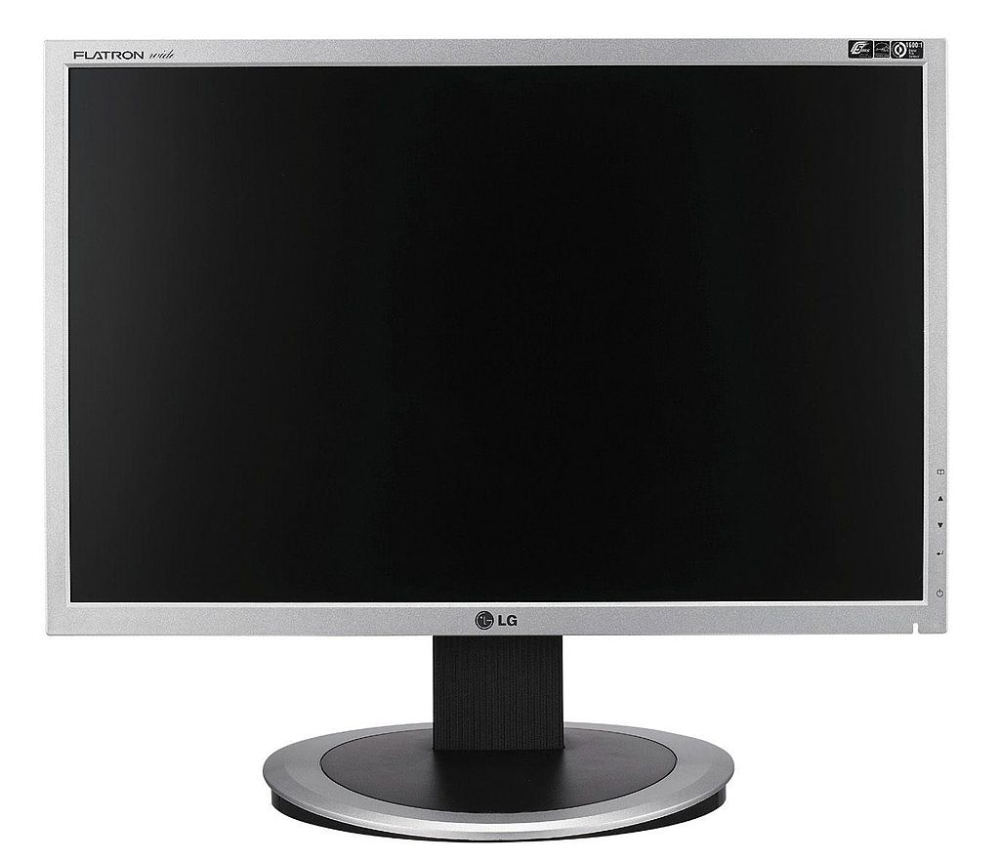
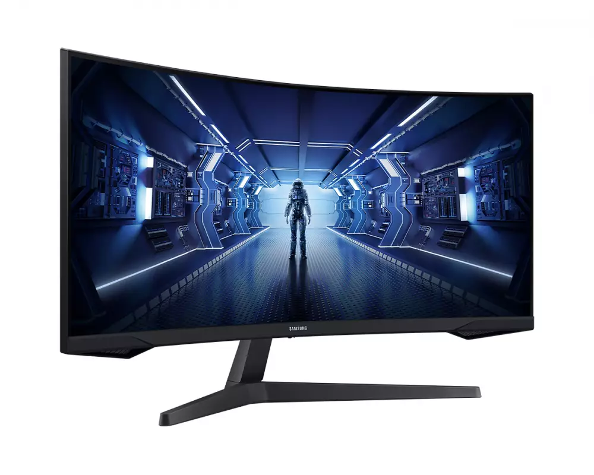
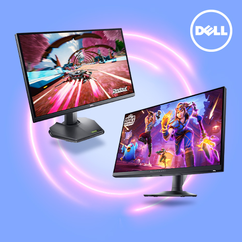
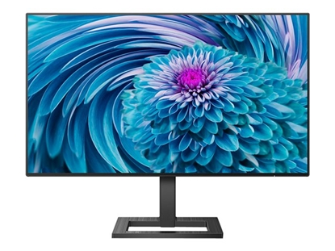
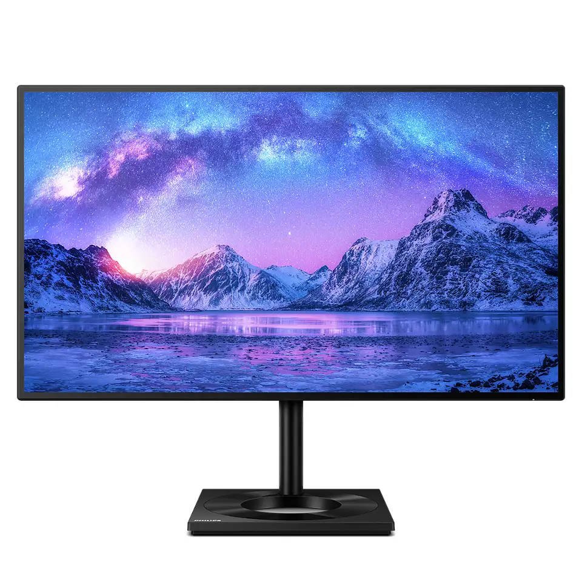
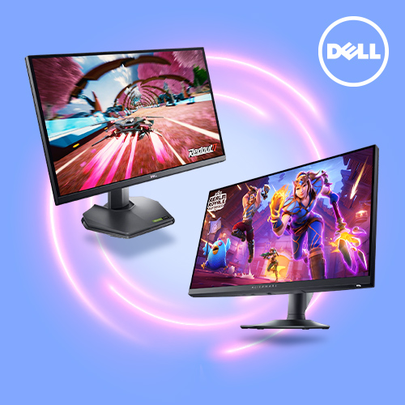
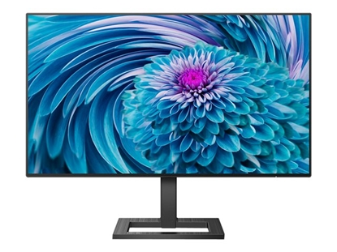
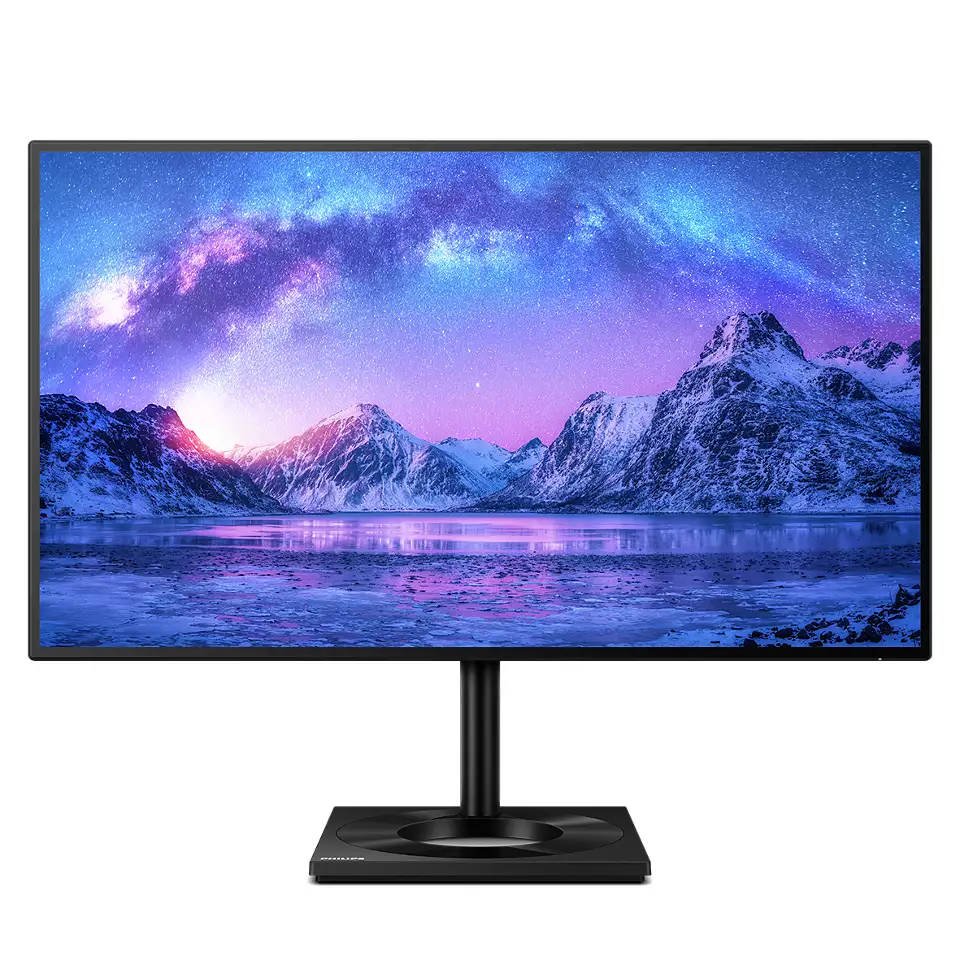

   
Монитор (или още дисплей, екран) e устройство за изобразяване на информация във визуален или тактилен вид. Повечето монитори преди имаха
катодно-лъчева тръба и формата на голяма кутия с екран, но от няколко години се увеличава използването на екрани с течни кристали и плазмени екрани,
които са по-компактни. За разлика от телевизора, мониторът няма тунер и обикновено е с по-висока разделителна способност и честота на опресняване
(при лъчевите монитори). При телевизорите обаче също се въвежда висока разделителна способност заради новите технологии за видео дискове и телевизионни
програми с висока разделителна способност.
Най-често под термина монитор се разбира изходното устройство на компютър. Той осигурява моментално потвърждение на това, което правите чрез входните
устройства (мишка, клавиатура и др.) като показва текст и графика, докато работите или играете.
История:
Мониторите са изминали дълъг път от времето на мигащите в зелено екрани на компютърните системи от 70-те години на 20-ти век, изобразяващи само текст в един цвят.
• През 1981 г. IBM представя Color Graphics Adapter (CGA), който е способен да възпроизведе четири цвята, и постига максимална резолюция от 320 пиксела
хоризонтално на 200 пиксела вертикално.
• През 1984 г. IBM представя Enhanced Graphics Adapter (EGA) екран. Тази технология позволява до 16 различни цветове и увеличава резолюцията на
дисплея на 640х350 пиксела, което подобрява външния вид и прави четенето на текст по-лесно.
• През 1987 г. IBM представя Video Graphics Array (VGA) системата. Повечето компютри в днешно време поддържат този стандарт и много VGA монитори
са все още в употреба.
• IBM представя Extended Graphics Array (XGA) дисплея през 1990 г., който предлага 800х600 резолюция при истински цветове (true color) – 16,8 милиона цвята.
Повечето дисплеи, продавани днес поддържат Ultra Extended Graphics Array (UXGA) стандарта. Цветовата гама на UXGA се състои от 16,8 милиона цвята и
разделителна способност до 1600х1200 пиксела, в зависимост от паметта на видео картата на компютъра. Максималната резолюция по принцип зависи от броя
на цветовете, които се показват. Дисплей, който работи в SuperVGA (SVGA) режим, може да показва до 16,8 милиона цвята.
Видове монитори:
Монитори с електронно лъчева тръба (CRT – Cathode-Ray Tube)
В индустрия, в която развитието е толкова бързо, изглежда изненадващо, че технологията, по която се произвеждат телевизорите и
мониторите е на 100 години. Произходът на електронно-лъчева тръба (или CRT Cathode-Ray Tube, катодно-лъчева тръба) никога не е бил
много ясен. По-голямата част от компютърното общество смята, че германският учен Карл Фердинанд Браун е създал първия контролируем
модел на CRT през 1887 г. Към края на 30-те години на миналия век CRT започват да се използват в първите телевизионни приемници.
Въпреки че днешните CRT, които се използват при компютърните монитори, са претърпели модификации с цел подобряване на качеството на картината,
те все още работят на същия основен принцип.
Течнокристален екран
Течнокристалният екран е добре познат с английската си абревиатура LCD, което идва от първите букви на liquid crystal display.
Този вид екран се използва при цифровите часовници, калкулатори и множество портативни компютри.
LCD дисплеите използват два слоя с разтвор от течни кристали, намиращ се между тях, плюс поляризатор. При преминаване на електричен ток през
течността кристалите се подравняват, така че светлината, поляризирана от единия лист, не може да премине през другия. Следователно всеки кристал
представлява нещо като ключ, който или позволява на светлината да премине през него, или я блокира.
Монохромните LCD изображения често се появяват като сини или тъмно сиви изображения върху сребрист фон. Цветните LCD дисплеи използват два вида матрици.
Пасивната матрица е по-евтината от тези две технологии. При нея за всеки ред и всяка колонка от пиксели има отделен извод. Другият вид матрици са активните матрици.
Дисплеите, произвеждани с такива матрици, използват TFT (Thin Film Transistor – тънкослоен транзистор) за управление на всяка точка от изображението, което се
получава почти толкова реалистично, колкото и това на стандартните CRT дисплеи. Наличието на допълнителни елементи в самата матрица оскъпява производството.
Дисплеите с пасивна матрица, появили се на пазара и които използват CSTN и DSTN технологиите, демонстрират ясни цветове, като по този начин конкуренцията между
тях и дисплеите с активна матрица става все по-жестока.
Повечето LCD монитори, използвани при преносимите компютри са „предавателни“, което прави текста, който се изобразява на тях, по-лесен за четене.
Начинът, по който LCD контролира преминаването на светлината, обхваща поляризирането на светлината. След като веднъж светлината бива поляризирана в
определен ъгъл на поляризация с филтър, нейната сила може да бъде контролирана чрез настройване на ъгъла на поляризиране чрез друг филтър.


Тънкослойни транзисторни дисплеи
Този вид дисплей за комплексни изображения изисква точкова матрица с голяма резолюция, съдържаща хиляди пиксели.
Например при VGA стандарта за компютърни дисплеи, който съдържа изображение с големина 640 на 480 пиксела, като при LCD дисплеите има общо 921 600 различни
суб-пиксела. С помощта на тези тънкослойни транзисторни дисплеи могат да се изобразяват перфектни картини, в които всеки пиксел е свързан със силициев
транзистор, с който се регулира светенето и цвета на пиксела. Използването на транзистори за всеки пиксел се нарича „TFT активна матрица“.
Това е точно обратното на пасивната матрица, описана в предишната секция. TN ефектът показва черно-бяло изображение, а цветните
изображения се формират от трипикселови групи използващи червени, сини и зелени филтри. Изобразената картина се осветява от светлина поставена
зад течнокристалния панел.
Представени в края на 80-те години TFT дисплеи са широко разпространени, използват се при преносимите компютри и плоските монитори за
персонални компютри. Някои от недостатъците на TFT като ъгъла на виждане на изображението, бързината на опресняване, и високата цена при
производството на големи екрани, намаляват експлоатацията им. Независимо от това LCD навлиза и на пазара на телевизори.
• TN TFT или ТН+Film TFT
Най-разпространеният тип цифров панел е базиран на технологията, наречена TN TFT или ТН+Film TFT (Twisted Nematic + Film).
Терминът „пласт“ (Film) означава допълнителен външен слой, който позволява да бъде увеличен обичайният ъгъл на гледане от 90
(45 от всяка от двете страни) до 140 градуса.
• Super-TFT или IPS
Следващият основен тип LCD технология е IPS (In-Plane Switching), който е замислен, така че да подобри някои от недостатъците на TN TFT
технологията. Тази технология също така бива наричана Super-TFT и бива развивана от фирмата Hitachi. IPS позволява увеличаване на ъгъла на
видимост до почти 170 градуса, използвайки по-прецизен метод за контрол на наредбата на течните кристали, който е основният принос на тази технология.
Въпреки това, контрастните съотношения остават на същото ниво, на което са тези при TN TFT технологията, а времето за реакция дори е нараснало.
• MVA
Третата технология бива развивана от фирмата Fujitsu и е обещаваща от гледна точка на преодоляването (нещата изглеждат така поне от теоретична гледна точка)
на основните недостатъци на LCD панелите. Тази технология се нарича MVA (Multi-Domain Vertical Alignment или Многоадресово Вертикално Разположение) и
е наследника на предишните VA технологии. В общи линии нейните предимства се съсредоточават в това че тя е способна да подобри ъгъла на видимост и
представянето на цветовете. Тя осъществява тези си предимства, поради факта, че притежава всички цветови елементи върху панела, като те са разделени на
клетки и зони. Те се формират по надигнатите части на вътрешната структура на филтрите. Целта на този дизайн е да може течните кристали да се движат в
посока, противоположна на съседните си течни кристали. Това също така позволява на наблюдателя да вижда същата степен на засенченост и качество на
цвета, независимо от ъгъла на гледане.
Плазмени дисплеи
Принципът на действие на плазмените дисплеи се състои в следното. Всеки субпиксел е микроскопична флуоресцентна лампа, която излъчва само един от
трите основни цвята. Чрез промяна на интензитета на светлината на субпикселите се постигат нюанси на възпроизвежданите цветове. При плазмените екрани
се използва благороден газ (например аргон), затворен в определен обем. На всеки от краищата на това тяло има електроди, посредством които се подава високо
напрежение (няколкостотин волта). Така газът преминава в плазмено състояние, т.е. налични са еднакъв брой свободни електрони и положителни йони.
В резултат на приложеното напрежение се формира поток на електроните към положителния електрод и на йоните към отрицателния. При сблъскването на атомите
последните получават енергия, благодарение, на която електроните им преминават на по-високо енергийно ниво. При връщане към стандартните им орбити
се отделят фотони или казано с други думи – светлина. Така светлината е резултат от движението на плазмата под въздействието на силно електрическо поле.
Тази светлина обаче не е видима, а е ултравиолетова, затова стените на телата, в които е затворена плазмата, се покриват със специален прах (фосфор), който реагира
на ултравиолетови лъчи и на свой ред излъчва бяла светлина. В това отношение плазмените дисплеи до известна степен приличат на конвенционалните кинескопи.
Органични светодиоди
Според всички специалисти, OLED структурата е технологията, която в един момент на своето развитие ще изпревари TFT технологията и ще стане доминираща
и то не само за мониторите и телевизионните приемници, но и при мобилните телефони, цифровите камери и др.
Технологията OLED, макар и да повтаря пътя на развитие, изминат от LCD (пасивни и активни матрици), има две много съществени отличия от LCD, които се
виждат и от заглавието и – това са използваният материал (органични съединения), и принцип на изобразяване (автономно излъчване на светлина). Предимството
на тази технология се състои в това, че не са необходими лампи, осветяващи матрицата отзад, а всеки пиксел сам излъчва светлина под управлението на OLED диоди,
които, всъщност, представляват отделните пиксели. Яркостта на светене се определя от тока, които се подава на диода.
Органичните светоизпускащи дисплеи се състоят от групи слоеве (дебели около 100nm), които се поставят между катод и анод. По принцип за субстрат
се ползва стъкло, покрито с прозрачен проводим оксид, като това служи за анод. Следва слоят от органични пластове, състоящи се също от проводими
материали, а накрая е неорганичен катод. Сред ключовите предимства на органичната луминесценция са: химическата променливост на светоизпускащите диоди,
което позволява производството на всички цветове, включително и бяло; възможността да се използват изключително тънки и гъвкави субстрати за постигане на
високо качество на картината и т.н.
В OLED технологията се различават 2 групи от материали. В първата влизат материали с ниско молекулно тегло, наричани small-molecule (SM) OLED.
Такива дисплеи са представени за пръв път от доктор Чинг Танг в лабораториите на Kodak през 1987. Базираните на полимери OLED-и (PLED) са основани на
дълги полимерни вериги.
„Емисионно поле“
Технологията FED донякъде наподобява процесите на обикновените CRT монитори, тъй-като и при двата типа дисплеи се използва луминофор,
частиците на който светят под въздействието на електронния лъч. За разлика от обикновения кинескоп, обаче, в който се използват три пушки, бомбардиращи
с електрони луминофора, в FED дисплеите огромно количесто малки източници на електрони са разположени зад всеки един условен пиксел на екрана, заемайки
значително по-малко място в пространството, особено в дълбочина.
Най-голям е напредъкът при технологията „емисионно поле“ SED (Surface conduction electron emitter display или повърхностно-проводников електронно емитиращ дисплей),
съвместна разработка на японските електронни гиганти „Канон“ и „Тошиба“.
Тази технология може най-лесно да се представи като комбинация от кинескопи и течни кристали. Както и в брауновата тръба, цветното изображение
се получава на стъклен екран, след като електронен лъч задейства червен, син и зелен фосфор. Ала вместо използването на централен източник на електрони, както
е в традиционния браунов кинескоп, където електронният лъч се отклонява така, че осветява всички отделни точки на изображението една след друга, при технологията
SED всяка точка се активизира от собствен лъч.
Това става на противостоящия втори стъклен екран, където хиляди електродни двойки са наредени в една обща плоскост и при прилагането на напрежение
предизвикват миниатюрен електронен лъч. За всяка точка от изображението се използват три двойки електроди – съответно за червения, зеления и синия цвят.
LEP – Монитор от „светещи полимери“
Технологията LEP (Light Emission Plastics), разработена от английската фирма Cambridge Display Technology (CDT) преди около 5 години, на практика
представлява едно от многото стъпала към постепенното подобряване на технологията на светещите полимери, в случая пластик, която се очаква да навлезне в
ежедневието ни след няколко години, заменяйки сега масовата TFT.
 






Автор: Мирослав Радославов Михнев,
5 клас, МГ "Баба Тонка", град Русе